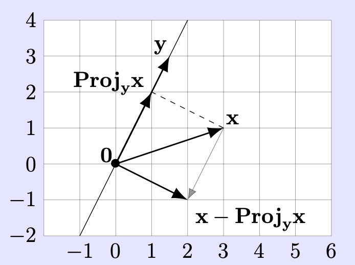
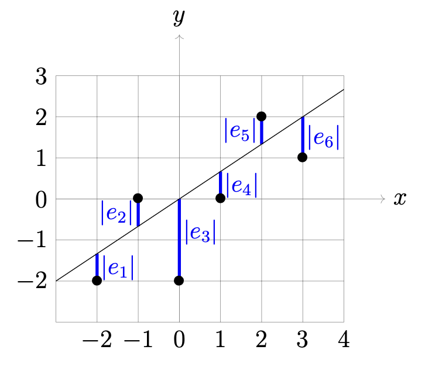

Applications of Projections in ℝⁿ: Orthogonal Bases of Planes and Linear Regression
Linear regression refers to the problem of finding a function \(f(x) = mx + b\) which best fits a collection of given data points \((x_i, y_i)\).
Finding an orthogonal basis: special case
Theorem: Suppose \(\mathbf{x}, \mathbf{y} \in \mathbb{R}^n\) are nonzero, and not scalar multiples of each other. The vectors \(\mathbf{y}\) and \(\mathbf{x}' = \mathbf{x} - \text{Proj}_{\mathbf{y}} \mathbf{x}\) constitute an orthogonal basis of \(\text{span}(\mathbf{x}, \mathbf{y})\). In particular, \(\text{span}(\mathbf{x}, \mathbf{y})\) is 2-dimensional.
The setup is symmetric in \(\mathbf{x}\) and \(\mathbf{y}\), so \(\{\mathbf{x}, \mathbf{y}' = \mathbf{y} - \text{Proj}_{\mathbf{x}} \mathbf{y}\}\) is also an orthogonal basis of \(\text{span}(\mathbf{x}, \mathbf{y})\).

Note: This is similar to the situation of projection of \(\mathbf{x}\) onto a linear subspace \(V\). The displacement vector between the projection and \(\mathbf{x}\) is perpendicular to everything in \(V\). In our case, when we project \(\mathbf{x}\) onto the span of \(\mathbf{y}\), the resulting vector \(\mathbf{x}' = \mathbf{x} - \text{Proj}_{\mathbf{y}} \mathbf{x}\) is orthogonal to \(\mathbf{y}\), which means it's perpendicular to everything in the span of \(\mathbf{y}\). This is why \(\mathbf{y}\) and \(\mathbf{x}'\) form an orthogonal basis - they are perpendicular to each other and together span the same 2-dimensional space as the original vectors \(\mathbf{x}\) and \(\mathbf{y}\).
Example: Consider the plane \(V\) in \(\mathbb{R}^3\) through \(0\) spanned by the vectors
Imagine that this plane is a metal sheet on which an electric charge is uniformly distributed. An iron particle placed at the point \(\mathbf{p} = \begin{bmatrix} 1 \\ 1 \\ 1 \end{bmatrix}\) would then be attracted to the metal sheet, and by the symmetry of the situation this particle would move straight towards the point on the plane closest to the initial position of the particle. What is that point?
In other words, we seek to compute the projection \(\text{Proj}_V(\mathbf{p})\). To compute this, we first seek an orthogonal basis for the plane \(V\). By the theorem above, such an orthogonal basis is given by \(\mathbf{w}\) and \(\mathbf{v}' = \mathbf{v} - \text{Proj}_{\mathbf{w}}(\mathbf{v})\). We first compute \(\text{Proj}_{\mathbf{w}}(\mathbf{v})\). This is given by
Thus \(\mathbf{v}' = \mathbf{v} - \begin{bmatrix} 0 \\ \frac{9}{25} \\ \frac{12}{25} \end{bmatrix} = \begin{bmatrix} 2 \\ \frac{16}{25} \\ -\frac{12}{25} \end{bmatrix}\). As a safety check, \(\mathbf{w}\) and \(\mathbf{v}'\) are indeed orthogonal.
The vector \(\mathbf{v}'\) is a bit ugly due to the fractions, and for the purposes of having an orthogonal basis it is harmless to replace it with a nonzero scalar multiple, such as
Since \(\{\mathbf{w}, \mathbf{v}''\}\) is an orthogonal basis of the plane \(V\), we have
To compute these projections, we first work out some relevant dot products:
Hence
Thus, the place on the metal sheet that the particle ends up at is
Example: Let \(\mathbf{w}_1 = \begin{bmatrix} 1 \\ 1 \\ 1 \\ 1 \end{bmatrix}\) and \(\mathbf{w}_2 = \begin{bmatrix} 1 \\ -3 \\ 1 \\ 1 \end{bmatrix}\). Define \(U\) to be the collection of all 4-vectors \(\mathbf{u}\) that are orthogonal to both \(\mathbf{w}_1\) and \(\mathbf{w}_2\). Show that \(U\) is a linear subspace of \(\mathbb{R}^4\) by writing it as a span of finitely many vectors. Explain why \(\dim(U) = 2\).
Solution:
First, let's understand what \(U\) represents. A vector \(\mathbf{u} = \begin{bmatrix} u_1 \\ u_2 \\ u_3 \\ u_4 \end{bmatrix}\) belongs to \(U\) if and only if:
This gives us the system of equations:
Subtracting the second equation from the first:
Substituting \(u_2 = 0\) back into the first equation:
This means \(u_1 = -u_3 - u_4\). So any vector in \(U\) must have the form:
Let's define:
Then \(U = \text{span}(\mathbf{v}_1, \mathbf{v}_2)\), which shows that \(U\) is indeed a linear subspace of \(\mathbb{R}^4\).
The dimension of \(U\) is 2 because we found that \(U\) is spanned by two vectors: \(\mathbf{v}_1\) and \(\mathbf{v}_2\). These vectors are linearly independent (neither is a scalar multiple of the other). Therefore, \(\{\mathbf{v}_1, \mathbf{v}_2\}\) is a basis for \(U\). Since the basis has 2 elements, \(\dim(U) = 2\).
Fitting a function to data
What does "best fit" mean? Informally, we want \(f(x_i)\) to be as close as possible to \(y_i\) for all \(i\). The error
measures in absolute value how close the line \(y = mx + b\) is vertically to \((x_i, y_i)\).

Suppose the line is given by the equation \(y = mx + b\). Suppose the \(i\)th data point is denoted \((x_i, y_i)\). The \(i\)th error is given by \(\text{error}_i = e_i = y_i - (mx_i + b)\). These errors are shown as blue line segments in the figure.
To be a "good fit" means to choose \((m, b)\) so that the errors are collectively small. There are many ways to specify what "collectively small" means. The meaning in the least squares method is this: choose \((m, b)\) to minimize the sum of the squares of the errors; i.e., choose \((m, b)\) to minimize
Why use the sum of squares of the errors? The errors themselves might be positive and might be negative; we want to penalize a large negative error as well as a large positive error, so squaring errors removes the sign.
But sometimes other ways to define the "total error" are indeed more appropriate, such as summing the absolute values of the errors (used in computational statistics, geophysics, and the important signal processing algorithm called "compressed sensing"). The absolute value function is inconvenient for our purposes; e.g., from a calculus viewpoint, \(|x|\) has the defect relative to \(x^2\) that it is not differentiable at \(x = 0\). Always remember that we choose how to define "total error" for any particular application, and experience determines the appropriateness of that choice; mathematics is a creation of the human mind.
Put the data of all \(x\)-values into a single \(n\)-vector, and the data of all \(y\)-values into a single \(n\)-vector:
Also, define \(\mathbf{1} = \begin{bmatrix} 1 \\ 1 \\ 1 \\ \vdots \\ 1 \end{bmatrix} \in \mathbb{R}^n\) to be the vector with all entries equal to 1 (analogous to \(\mathbf{0} = \begin{bmatrix} 0 \\ 0 \\ 0 \\ \vdots \\ 0 \end{bmatrix} \in \mathbb{R}^n\)), so
and hence
Thus, since \(\sum_{i=1}^n v_i^2 = \|\mathbf{v}\|^2\) for any \(\mathbf{v} \in \mathbb{R}^n\) (by definition of \(\|\mathbf{v}\|\)!), the sum of the squares of the errors is
So we seek \(m\) and \(b\) that minimizes the squared length of \(Y - (mX + b\mathbf{1})\), which is the same as minimizing the length of that difference.
The length \(\|Y - (mX + b\mathbf{1})\|\) is the distance from \(Y\) to \(mX + b\mathbf{1}\) since "distance" between any \(n\)-vectors \(\mathbf{v}\) and \(\mathbf{w}\) is \(\|\mathbf{v} - \mathbf{w}\|\) by definition. As \(m\) and \(b\) vary, the vectors of the form \(mX + b\mathbf{1}\) are exactly the vectors in \(\text{span}(X, \mathbf{1})\), due to the definition of "span". Hence, the least-squares minimization problem for \(n\) data points is equivalent to the following geometric problem:
find the vector in \(\text{span}(X, \mathbf{1})\) that is closest to the vector \(Y \in \mathbb{R}^n\).
Our task is now an instance of finding the point of a linear subspace of \(\mathbb{R}^n\) closest to a given \(n\)-vector.
The vectors \(X\) and \(\mathbf{1}\) are not scalar multiples of each other because the hypothesis that the \(n\) data points do not lie in a common vertical line (i.e., the \(x_i\)'s are not all equal to each other) says that \(X\) is not a scalar multiple of the nonzero vector \(\mathbf{1}\).
By using the Theorem above, an orthogonal basis of \(\text{span}(X, \mathbf{1})\) is given by \(\mathbf{1}\) and \(\hat{X} = X - \text{Proj}_{\mathbf{1}}X\) with
equal to the \(n\)-vector each of whose entries is equal to the average \(\bar{x}\) of the \(x_i\)'s. Hence,
is obtained from \(X\) by subtracting the average \(\bar{x}\) from all entries.
By applying to this span the formula for the nearest point on a linear subspace in terms of an orthogonal basis, we obtain that the closest vector to \(Y\) in \(\text{span}(X, \mathbf{1})\) is
where \(\bar{y} = (1/n) \sum_{i=1}^n y_i\) is the average of the \(y_i\)'s.
In the expression \(\frac{Y \cdot \hat{X}}{\hat{X} \cdot \hat{X}} \hat{X} + \bar{y} \mathbf{1}\) on the right side, we can expand \(\hat{X}\) in terms of \(X\) and \(\mathbf{1}\) using the definition of \(\text{Proj}_{\mathbf{1}}(X)\) and collect terms to rewrite this as a linear combination \(mX + b\mathbf{1}\) of \(X\) and \(\mathbf{1}\). Those coefficients \(m\) and \(b\) are exactly the desired "\(m\)" and "\(b\)" for the best-fit line!
Correlation Coefficient and quality of fit
Let the best-fit line be \(y = mx + b\), and let \(r\) be the correlation coefficient for the recentered data \((x_i - \bar{x}, y_i - \bar{y})\) (whose coordinates average to 0) with associated \(n\)-vectors \(\hat{X}\) and \(\hat{Y}\). Then the role of nearness of \(r^2\) to 1 (or equivalently of nearness of \(1 - r^2\) to 0) as a measure of quality of fit is expressed by the following identity:
This equation will be proven later.
where \(\hat{Y}\) is the "recentered" version of \(Y\) (subtracting \(\bar{y}\) from all \(y_i\)'s).
To explain the meaning of the above equation, expand out the left side (and use that \(t^2 = |t|^2\) for any \(t\)) to get
The number \(|y_i - (mx_i + b)|\) is the vertical distance between the data point \((x_i, y_i)\) and the best fit line \(y = mx + b\). When \(r^2 \approx 1\), the equation therefore says that these vertical distances are "collectively small": the sum of their squares is tiny since \(1 - r^2\) on the right side of the equation is small, so the data points are all close to the best fit line. When \(r^2 \approx 0\) then (at least informally) the opposite happens since the right side is approximately \(\|\hat{Y}\|^2\), which is typically quite far from 0 (even though the average of the entries in \(\hat{Y}\) is 0 by design).
Example: Sometimes a quantity \(y\) of interest is expected to be (approximately "linearly") related to a pair of quantities \(x\) and \(v\) rather than just a single quantity \(x\). In such cases, as a variant on linear regression, we seek three constants \(a, b, c\) for which
as measured by data.
Suppose we make \(n\) measurements of \(x, v, y\), yielding data points \((x_i, v_i, y_i)\). Let \(X, V, Y \in \mathbb{R}^n\) be the corresponding \(n\)-vectors for the \(n\) measurements of each of \(x, v, y\). Assume \(W = \text{span}(\mathbf{1}, X, V)\) is 3-dimensional (a reasonable assumption when neither \(x\) nor \(v\) determines the other).
(a) Explain in words how the vector \(\text{Proj}_W(Y) \in W\) encodes a "least squares" choice of \((a, b, c)\) in terms of the data.
(b) What is the practical difficulty in using the equation of finding a projection of a vector to compute \(\text{Proj}_W(Y)\), whereas we had no difficulty in computing the analogous such projection for linear regression?
Solution:
(a) Least Squares Interpretation
The vector \(\text{Proj}_W(Y) \in W\) represents the closest point in the subspace \(W = \text{span}(\mathbf{1}, X, V)\) to the data vector \(Y\). Since \(W\) is 3-dimensional, any vector in \(W\) can be written as a linear combination:
for some constants \(a, b, c \in \mathbb{R}\).
This projection minimizes the distance \(\|Y - (a\mathbf{1} + bX + cV)\|\), which is equivalent to minimizing the sum of squared errors:
Therefore, the coefficients \((a, b, c)\) in the expression \(\text{Proj}_W(Y) = a\mathbf{1} + bX + cV\) represent the least squares solution to the multiple linear regression problem \(y \approx a + bx + cv\).
(b) Practical Difficulty
The practical difficulty in computing \(\text{Proj}_W(Y)\) for multiple linear regression compared to simple linear regression is the dimensionality of the subspace.
Simple Linear Regression (2D subspace):
-
We had \(W = \text{span}(\mathbf{1}, X)\), a 2-dimensional subspace
-
We could easily construct an orthogonal basis using the Gram-Schmidt process
-
The projection formula was straightforward: \(\text{Proj}_W(Y) = \text{Proj}_{\mathbf{1}}(Y) + \text{Proj}_{\hat{X}}(Y)\)
-
We could compute this step-by-step with simple projections
Multiple Linear Regression (3D subspace):
-
We now have \(W = \text{span}(\mathbf{1}, X, V)\), a 3-dimensional subspace
-
Constructing an orthogonal basis becomes more complex
-
The Gram-Schmidt process requires more steps and can lead to numerical instability
-
The projection formula involves more terms and becomes computationally intensive
Specific Challenges:
-
Orthogonal Basis Construction: We need to find three mutually orthogonal vectors spanning \(W\), which requires applying Gram-Schmidt to three vectors instead of two.
-
Numerical Stability: As the dimension increases, small errors in computations can accumulate, leading to less accurate results.
-
Computational Complexity: The projection involves more dot products and vector operations, making it computationally expensive for large datasets.
-
Matrix Methods: For higher dimensions, it becomes more practical to use matrix methods (like QR decomposition or solving the normal equations) rather than geometric projection formulas.
This is why in practice, multiple linear regression is typically solved using matrix algebra and computational algorithms rather than the geometric projection approach, even though the geometric interpretation remains valid and insightful.
Example: The vectors \(\mathbf{v} = \begin{bmatrix} 2 \\ -1 \\ -1 \\ 1 \end{bmatrix}\) and \(\mathbf{w} = \begin{bmatrix} 11 \\ 5 \\ -10 \\ 1 \end{bmatrix}\) span a plane \(P\) through the origin in \(\mathbb{R}^4\). Let
be a line in \(\mathbb{R}^4\).
(a) Consider the displacement vector \(\mathbf{x}\) between any two different points of \(L\) (all such displacements are scalar multiples of each other since \(L\) is a line). Show that \(\mathbf{x}\) belongs to \(P\); this is described in words by saying \(L\) is parallel to \(P\).
Solution:
Let's take two different points on the line \(L\) by choosing two different values of \(t\). Let's use \(t = 0\) and \(t = 1\):
-
Point 1 (when \(t = 0\)): \(\begin{bmatrix} 4 \\ 4 \\ 4 \\ -7 \end{bmatrix}\)
-
Point 2 (when \(t = 1\)): \(\begin{bmatrix} 3 \\ 8 \\ 3 \\ -9 \end{bmatrix}\)
The displacement vector between these two points is:
We need to find scalars \(a, b \in \mathbb{R}\) such that:
This gives us the system of equations:
Which expands to:
Let's solve equations (1) and (2) first:
From equation (2): \(4 = -a + 5b\), so \(a = 5b - 4\)
Substitute into equation (1):
Now substitute \(b = \frac{1}{3}\) back to find \(a\):
Let's check if \(a = -\frac{7}{3}\) and \(b = \frac{1}{3}\) satisfy all four equations:
Equation (1): \(2a + 11b = 2\left(-\frac{7}{3}\right) + 11\left(\frac{1}{3}\right) = -\frac{14}{3} + \frac{11}{3} = -\frac{3}{3} = -1\) ✓
Equation (2): \(-a + 5b = -\left(-\frac{7}{3}\right) + 5\left(\frac{1}{3}\right) = \frac{7}{3} + \frac{5}{3} = \frac{12}{3} = 4\) ✓
Equation (3): \(-a - 10b = -\left(-\frac{7}{3}\right) - 10\left(\frac{1}{3}\right) = \frac{7}{3} - \frac{10}{3} = -\frac{3}{3} = -1\) ✓
Equation (4): \(a + b = -\frac{7}{3} + \frac{1}{3} = -\frac{6}{3} = -2\) ✓
Since we found scalars \(a = -\frac{7}{3}\) and \(b = \frac{1}{3}\) such that:
This proves that the displacement vector \(\mathbf{x} = \begin{bmatrix} -1 \\ 4 \\ -1 \\ -2 \end{bmatrix}\) belongs to the plane \(P = \text{span}(\mathbf{v}, \mathbf{w})\).
This means that the line \(L\) is parallel to the plane \(P\). In \(\mathbb{R}^4\), just as in \(\mathbb{R}^3\), a line is parallel to a plane if the direction vector of the line (which is a scalar multiple of any displacement vector between two points on the line) lies in the plane.
(b) Whenever one has a linear subspace \(V\) of \(\mathbb{R}^n\) and a line \(\ell\) in \(\mathbb{R}^n\) (possibly not through the origin) that is parallel to \(V\), it is a fact (not difficult to show, but you may take it on faith) that all points in \(\ell\) have the same distance to \(V\). That is, for every point \(\mathbf{y} \in \ell\) and the point \(\mathbf{y}' \in V\) nearest to \(\mathbf{y}\), the distance \(\|\mathbf{y} - \mathbf{y}'\|\) is the same regardless of which \(\mathbf{y}\) on \(\ell\) we consider. Taking \(V\) and \(\ell\) to be \(P\) and \(L\) above, compute the common distance \(\|\mathbf{y} - \mathbf{y}'\|\) (since it is independent of \(\mathbf{y}\), you may pick whatever you consider to be the most convenient point \(\mathbf{y}\) in \(L\) to do the calculation).
Solution:
Since all points on the line \(L\) have the same distance to the plane \(P\), we can choose the most convenient point. Let's use the point when \(t = 0\): \(\mathbf{y} = \begin{bmatrix} 4 \\ 4 \\ 4 \\ -7 \end{bmatrix}\).
The distance from \(\mathbf{y}\) to the plane \(P\) is the distance from \(\mathbf{y}\) to its projection onto \(P\). To find this projection, we need an orthogonal basis for \(P\).
Step 1: Find an orthogonal basis for \(P\)
Using the theorem from earlier, we can construct an orthogonal basis for \(P = \text{span}(\mathbf{v}, \mathbf{w})\):
Let \(\mathbf{v}_1 = \mathbf{v} = \begin{bmatrix} 2 \\ -1 \\ -1 \\ 1 \end{bmatrix}\)
Then \(\mathbf{v}_2 = \mathbf{w} - \text{Proj}_{\mathbf{v}_1}(\mathbf{w})\)
First, compute \(\text{Proj}_{\mathbf{v}_1}(\mathbf{w})\):
So:
Therefore:
Step 2: Compute the projection of \(\mathbf{y}\) onto \(P\)
Using the orthogonal basis \(\{\mathbf{v}_1, \mathbf{v}_2\}\), the projection is:
Compute the dot products:
So:
Step 3: Compute the distance
The distance from \(\mathbf{y}\) to the plane \(P\) is:
Answer: The common distance from any point on the line \(L\) to the plane \(P\) is \(\sqrt{75}\).
Orthogonal basis formula and relation of correlation coefficient to best fit lines
In this section we prove some results discussed earlier.
Theorem: Suppose \(\mathbf{x}, \mathbf{y} \in \mathbb{R}^n\) are nonzero, and not scalar multiples of each other. The vectors \(\mathbf{y}\) and \(\mathbf{x}' = \mathbf{x} - \text{Proj}_{\mathbf{y}} \mathbf{x}\) constitute an orthogonal basis of \(\text{span}(\mathbf{x}, \mathbf{y})\). In particular, \(\text{span}(\mathbf{x}, \mathbf{y})\) is 2-dimensional.
The setup is symmetric in \(\mathbf{x}\) and \(\mathbf{y}\), so \(\{\mathbf{x}, \mathbf{y}' = \mathbf{y} - \text{Proj}_{\mathbf{x}} \mathbf{y}\}\) is also an orthogonal basis of \(\text{span}(\mathbf{x}, \mathbf{y})\).
Proof: Write \(\mathbf{x}' = \mathbf{x} - \text{Proj}_{\mathbf{y}} \mathbf{x}\).
Next, \(\mathbf{y}\) is not zero (we have assumed this). Also, \(\mathbf{x}'\) is not zero: if it were zero then \(\mathbf{x} = \text{Proj}_{\mathbf{y}}(\mathbf{x})\), yet such a projection is always a scalar multiple of \(\mathbf{y}\) and we have assumed \(\mathbf{x}\) is not a scalar multiple of \(\mathbf{y}\). Therefore \(\{\mathbf{x}', \mathbf{y}\}\) is a pair of nonzero orthogonal vectors belonging to \(\text{span}(\mathbf{x}, \mathbf{y})\) by design (note that \(\mathbf{y} = 0 \cdot \mathbf{x} + 1 \cdot \mathbf{y}\)), and they exhaust that span since we can also write each of \(\mathbf{x}\) and \(\mathbf{y}\) as linear combinations of \(\mathbf{x}'\) and \(\mathbf{y}\): \(\mathbf{x} = \mathbf{x}' + \text{Proj}_{\mathbf{y}}(\mathbf{x}) = \mathbf{x}' + ((\mathbf{x} \cdot \mathbf{y})/(\mathbf{y} \cdot \mathbf{y}))\mathbf{y}\) and \(\mathbf{y} = 0 \cdot \mathbf{x}' + 1 \cdot \mathbf{y}\). Since any collection of pairwise orthogonal nonzero vectors is a basis for its span, we conclude that \(\{\mathbf{x}', \mathbf{y}\}\) is an orthogonal basis of \(\text{span}(\mathbf{x}', \mathbf{y}) = \text{span}(\mathbf{x}, \mathbf{y})\).
Now suppose we are given \(n\) data points \((x_i, y_i)\), assembled into \(n\)-vectors
Earlier, we described the relationship between the correlation coefficient \(r\) for the recentered data (corresponding to the \(n\)-vectors \(\hat{X}\) and \(\hat{Y}\)) and the line of best fit. Let's restate that in terms of \(r^2\), which we expressed as the formula
We stated that \(r^2\) is near 0 when the line of best fit is a bad fit, and near 1 when it is a good fit (note that this could happen either when \(r\) is near 1, or when \(r\) is near −1). We made the role of \(r^2\) as a measure of quality of fit precise. Here is the derivation of \(\|Y - (mX + b\mathbf{1})\|^2 = \|\hat{Y}\|^2 (1 - r^2)\).
Proof: We know that the closest vector to \(Y\) in \(\text{span}(X, \mathbf{1})\) is
where \(\bar{y} = (1/n) \sum_{i=1}^n y_i\) is the average of the \(y_i\)'s.
where \(Y - \frac{Y \cdot \mathbf{1}}{\mathbf{1} \cdot \mathbf{1}}\mathbf{1} = Y - \bar{y}\mathbf{1}\) is indeed equal to \(\hat{Y}\).
Note that \(\hat{Y} \cdot \hat{X} = Y \cdot \hat{X}\) because the difference \(\hat{Y} - Y = -\bar{y}\mathbf{1}\) is orthogonal to \(\hat{X}\).
To understand why \(\hat{Y} \cdot \hat{X} = Y \cdot \hat{X}\), let's examine the orthogonality of \(\hat{Y} - Y = -\bar{y}\mathbf{1}\) to \(\hat{X}\). Recall that \(\hat{X} = X - \bar{x}\mathbf{1}\), which means \(\hat{X}\) is the vector \(X\) with the mean \(\bar{x}\) subtracted from each component. We need to show that \((-\bar{y}\mathbf{1}) \cdot \hat{X} = 0\). This is:
But \(\mathbf{1} \cdot X = \sum_{i=1}^n x_i = n\bar{x}\) and \(\mathbf{1} \cdot \mathbf{1} = n\).
So: \(-\bar{y}(\mathbf{1} \cdot X) + \bar{y}\bar{x}(\mathbf{1} \cdot \mathbf{1}) = -\bar{y}(n\bar{x}) + \bar{y}\bar{x}(n) = -n\bar{x}\bar{y} + n\bar{x}\bar{y} = 0\)
Putting this into the numerator of the final coefficient on the right side yields
The vectors \(\hat{Y} - \text{Proj}_{\hat{X}}\hat{Y}\) and \(\text{Proj}_{\hat{X}}\hat{Y}\) are perpendicular to each other. Therefore, by the Pythagorean Theorem in \(\mathbb{R}^n\), we have
so \(\|\hat{Y} - \text{Proj}_{\hat{X}}\hat{Y}\|^2 = \|\hat{Y}\|^2 - \|\text{Proj}_{\hat{X}}\hat{Y}\|^2\). But the vector difference on the left side is exactly \(Y - (mX + b\mathbf{1})\), so
Finally, using the definition of \(\text{Proj}_{\hat{X}}\hat{Y}\), we have
so plugging into \(\|Y - (mX + b\mathbf{1})\|^2 = \|\hat{Y}\|^2 - \|\text{Proj}_{\hat{X}}\hat{Y}\|^2\) yields \(\|Y - (mX + b\mathbf{1})\|^2 = \|\hat{Y}\|^2(1 - r^2)\), which is exactly the desired identity.